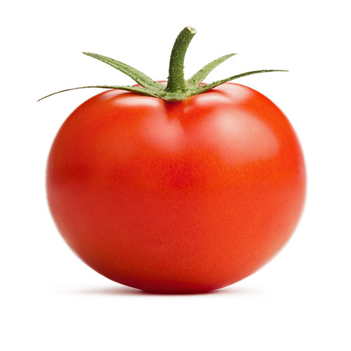
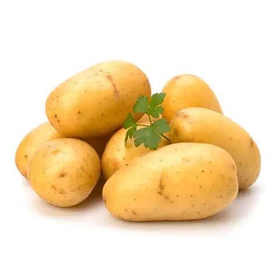

помидорОн красный
Тома́т, или помидо́р (лат. Solánum lycopérsicum), — однолетнее или многолетнее травянистое растение, вид рода Паслён (Solanum)[1] семейства Паслёновые (Solanaceae). Возделывается как овощная культура; выращивается ради съедобных плодов — сочных многогнёздных ягод различной формы и окраски, также называемых томатами или помидорами.

картошкаОн желтый чаще всего
Карто́фель, или паслён клубнено́сный (лат. Solánum tuberósum), — вид многолетних клубненосных травянистых растений из рода Паслён (Solanum) семейства Паслёновые (Solanaceae). Клубни картофеля являются важным пищевым продуктом. Плоды ядовиты в связи с содержанием в них соланина. С потребительской точки зрения картофель является овощем.